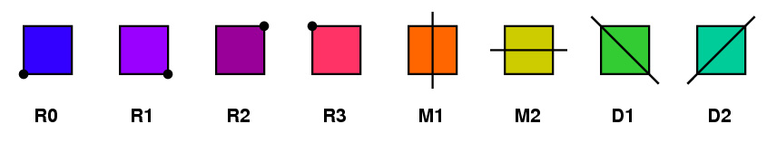

A group is a set \(G\) along with a binary algebraic operation \(\cdot\) that satisfies the following properties:
Closure: For any \(a,b\) in \(G\text{,}\) it follows that \(a\cdot b\) in \(G\text{.}\)
Associativity: For any \(a,b, c\) in \(G\text{,}\) it follows that \((a\cdot b)\cdot c = a\cdot (b\cdot c)\text{.}\)
Identity: There is an element (usually denoted) \(e\) in \(G\text{,}\) such that for any \(a\) in \(G\text{,}\) we have that \(e\cdot a=a\) and \(a\cdot e=a\text{.}\)
Inverses: For any \(a\) in \(G\text{,}\) we there is a \(a^{-1}\) in \(G\) so that \(a\cdot a^{-1}=e\text{.}\)
Problem3.1.2.
For each of the following, determine if the given set and operation for a group. If they do not, show for which operations precisely they fail.
Positive integers under addition.
Positive integers under multiplication.
Integers under addition.
Integers under multiplication.
Positive reals under addition.
Positive under multiplication.
Reals under addition.
Reals under multiplication.
Polynomials under addition.
Polynomials under composition.
Rock, Paper, Scissors under winner (or tie).
Bijections from \(\{1, 2, 3\}\to \{1, 2, 3\}\) under composition.
Problem3.1.3.
Consider the collection of the 8 possible symmetries of a square, 4 rotations (including the 0 degree identity rotation) and the 4 reflections:

Let composition \(\circ\) be the operation.
(a)
Find \(R1\circ R2\text{.}\)
(b)
Find \(R2\circ M1\text{.}\)
(c)
Find \(M1\circ R2\text{.}\)
(d)
Find \(D1\circ D2\text{.}\)
(e)
Find the inverse of \(M1\text{.}\)
(f)
Fill out an 8 by 8 “multiplication” table of the possible operations. What patterns do you notice?
(g)
Determine if this set and operation form a group.
(h)
Find two elements of this group, \(a,b\) so that each element of this group is some “product” of \(a, b\) powers.
Problem3.1.4.
Let \(\mathbb{Z}_n\) denote the integers modulo \(n\) with operation addition. For example \(\mathbb{Z}_4\) is the set \(\{0,1,2,3\}\) where \(2+1=3, 3+1=0, 3+2=1\) etc..
(a)
Pick 4 different \(n\)’s at least 2. Show that \(\mathbb{Z}_n\) for your choices for a group.
(b)
Prove that \(\mathbb{Z}_n\) is always a group.
Problem3.1.5.
Let \(D_n\) denote the symmetries of a regular \(n\)-sided polygon, with operation composition. For example in Problem 3.1.3 describes the symmetries of a regular \(4\)-gon ie a square.
(a)
Pick 3 different \(n\)’s at least 3. Show that \(D_n\) for your choices for a group.
(b)
Prove that \(D_n\) is always a group.
Problem3.1.6.
Let \(S_n\) denote the bijections from an \(n\) element set to itself, with operation composition. For example in Problem 3.1.2 describes \(S_3\) at the end.
(a)
Pick 3 different \(n\)’s at least 2. Show that \(S_n\) for your choices for a group.
(b)
Prove that \(S_n\) is always a group.
Problem3.1.7.
(a)
Prove that identities have to be unique. (What happens if there was a second identity \(e'\text{?}\))
(b)
Prove that right inverses are left inverses. (If there were \(b, c\) so that \(ab=e\) and \(ca=e\text{,}\) what would happen?)
Definition3.1.8.
A group is said to be abelian if for any \(a,b\in G, a\cdot b = b\cdot a\text{.}\)
Problem3.1.9.
In the groups you identified in Problem 3.1.2, which groups are abelian?
Definition3.1.10.
Given a group \(G\) a subset \(H\subseteq G\) is a subgroup of \(G\) if \(H\) is also a group with the same operation.
Problem3.1.11.
(a)
Show that even integers are a subgroup of the integers.
(b)
Determine if multiples of three are a subgroup of the integers.
(c)
Determine if odd integers are a subgroup of the integers.
(d)
Find 3 different subgroups of \(D_8\)
(e)
Given \(D_n\) are the collections of rotations a subgroup?
(f)
Given \(D_n\) are the collections of reflections a subgroup?
(g)
Label the corners of a square \(1, 2, 3, 4\text{.}\) How can this help us find a subgroup of \(S_4\) of size 8?
Problem3.1.12.
Let \(T(x)=x+1, R(x)=-\frac{1}{x}, e(x)=x\text{.}\)
(a)
Find \(k(x)\) so that =\(k(R(x)) = e(x)\) and \(R(k(x))=e(x)\text{.}\)
(b)
Let \(h(x) = R(T(R(T(x))))\text{.}\) simplify \(h(x)\text{.}\)
(c)
Let \(h(x) = R(T(R(T(x))))\text{.}\) simplify \(h(x)\text{.}\)
(d)
What are \(h(T(x))\) and \(T(h(x))\)
(e)
Show that the set of all possible compositions of \(T(x), R(x), e(x)\) form a group.
(f)
Recall you proof in Rational Tangles that each rational numbered may be achieved through the tangling process. Show that any knot corresponding to a tangle can be undone and reverted to the original position.
Definition3.1.13.
Let \(\varphi:G\to H\text{.}\) If \(\varphi\) is a bijection such that \(\varphi(a\cdot b)=\varphi(a)\cdot\varphi(b)\) we say that \(\varphi\) is a isomorphism and \(G, H\) are isomorphic.
under matrix multiplication are isomorphic. Can you think of a natural reason why they should be?
Problem3.1.15.
Find all subgroups of \(D_5\) which are isomorphic to \(\mathbb{Z}_2\text{.}\)
Problem3.1.16.
Determine if \(\mathbb{Z}_2\times \mathbb{Z}_2\) is isomorphic to \(\mathbb{Z}_4\text{.}\)
Problem3.1.17.
Find 3 groups of size 4 which are not isomorphic to each other or explain why this is not possible.
Problem3.1.18.
(a)
Compare GSETS to SETS. What collections of cards are SETS but not GSETS? What are GSETS but not SETS?
(b)
Pick a card which corresponds to \((0,0,0,0)\) pick two other cards \(a, b\) which are not inverses of each other. What is the subgroup generated by these two cards and what are their corresponding cards?
(c)
Remember when we conjectured that any 3 cards which don’t form a SET would generate a plane? Now prove it.